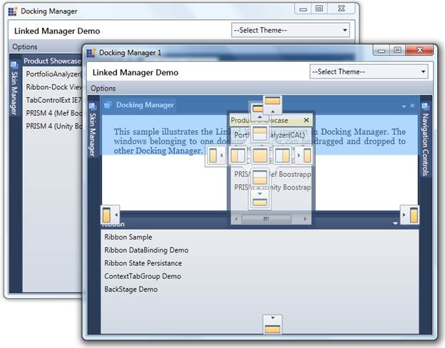

Linked Manager Support is an important feature that helps to drag and drop windows from one docking manager to any other docking manager.
Use Case Scenario
· This Drag and Drop support will enhance the Linked Manager functionality between Docking Managers.
· It permits the user to have better usability of any windows residing in any Docking Manager.

Figure 365: Linked Manager Support
 Getting started
Getting started